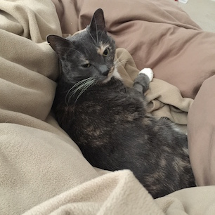

Objects in Ruby and the Real World
This is my cat Pearl. She is a complicated life form. What exactly is she? How does a human brain interpret and form a mental construct that represents something meaningful to us?
Regarding the human brain, there is still much debate as to exactly how it operates. However, is it helpful to recognize the fact that objects (mental constructs) consist of PROPERTIES and BEHAVIORS.
My cat Pearl has many PROPERTIES:
- Species: Felis silvestris catus
- Breed: Tortoise Shell
- Eye Color: Yellow
- Weight: 10 pounds
- Age: 7 years old
My cat Pearl also has many BEHAVIORS:
- Eats
- Sleeps
- Runs around like a crazy person
- Scratches the Rug
This categorization of PROPERTIES and BEHAVIORS also holds useful value in the programming world.
 When Yukihiro “Matz” Matsumoto created the Ruby programming language he was extremely committed to the principles that:
When Yukihiro “Matz” Matsumoto created the Ruby programming language he was extremely committed to the principles that:
- In Ruby, everything is an object.
- Every bit of information and code can be given their own properties and actions.
Constructing software in this manner is called object-oriented programming. The Ruby Language was implemented with these principles taking precedence. Object-oriented programming implements properties by the name of "instance variables" and actions are known as "methods."
In ruby Classes are used to construct objects. Classes work like a blueprint.
Let's create a simple class that models my cat Pearl.
class Pearl def initialize @species = "Felis silvestris catus" @breed: = "Tortoise Shell" @eye_color = "yellow" @weight = 10 @age: 7 end def sleep close_eyes relax end def eat find_food get_food_in_mouth chew swallow eat until food_gone == true end end
Now relax and realize that the purpose of this blog post is not to be technical. The main point that I wish to convey is the fact that representing constructs by PROPERTY or BEHAVIOR is helpful in the real world as well as in a programming context.
Start looking around at the world. Focus on an object. Take note of what you can qualify as a PROPERTY or BEHAVIOR of that object.
Contemplate if there is anything other than a property or behavior that you can qualify about that object.
If you find anything interesting feel free to sent me a message on my contact page.
- Brendan R. Miranda